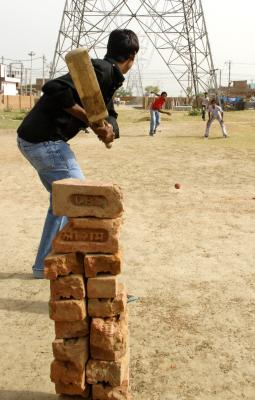
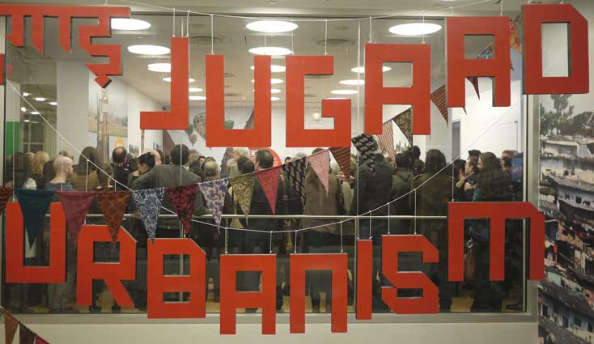

Published by Design Altruism Project.
In a recent essay, Hamid Dabashi has spoken out against the continuation of the obnoxious (colonial) practice of identifying European socio-cultural artifacts as the universal form, while the non-European others get prefixed with ‘ethno’ — such as, referring to European music as ‘music’ and studying non-European music as ‘ethnomusicology.’ The same practice appears in action, and often enjoys uncritical celebration, in the domain of design. We are being told that the Indians have a magic word, jugaad, that means “startling ingenuity in the face of adversity.” The question, however, is why do the Indians need a special word for a phenomena that Europeans (not in the sense of the continent but in vague civilizational terms) simply call innovation? Or, can non-Europeans innovate?
Jua kali lunch box, Kenya.
Before proceeding, I must add that I do not fully agree with Hamid Dabashi in his celebration of a rise of multiple local ‘cosmopolitan worldlinesses.’ I do not believe in a contemporary separation of European and non-European thinking, but in global exchanges through circulating analytical categories and socio-economic markers. Such ‘exchanges’ of course take place in a context of not-so-long-ago colonial history and a continued capitalist present. Further, in understanding the continued capitalist present (and accumulated exploitations of various capitalist and non-capitalist pasts), perhaps one needs to look within and beyond nation-state boundaries, thus making difficult the idea of finding one method or strategy of Indian designs, and other things.
Adelheid Fischer, among others, translates jugaad as ‘doing more with less.’ It makes one wonder whether innovation does not involve the same principle? The market-friendly definition of innovation explains that it combines invention with value-creation. Now how can something create (exchange) value unless it does ‘more with less’? It is indeed reassuring to know that jugaad is not a specialty of a particular branch of non-Europeans, but similar tendencies can be found elsewhere in the non-European world too, such as the Kenyan jua kali and the Mexican rasquachismo. Further, such a non-European mode of what-Europeans-call-innovation-when-they-do-it involves more than just ‘doing more with less.’ It involves an attitude, one that comes along when one has the “capacity to hold life together with bits of string, old coffee cans, and broken mirrors in a dazzling gesture of aesthetic bravado.”
Now at last one sees the reason for differentiating between innovation and jugaad. Unlike the former, the latter is characterized by an auto-aestheticization of the culture of scarcity, by a will to live life within the constraints of colonial/neocolonial/capitalist subjugation and not attempt to question and overcome such oppressions. As Western military think-tanks declare ‘slums of the urban south’ as final battlefields in the War Against Terror, one might appreciate and congratulate this form of ‘worldview of the have-not’ that encourages residents of the ‘global south’ to live with dignity within material constraints. What’s more is that most jugaad vehicles do not actually meet “crash-test standards in the U.S.” I suppose the death of slum residents due to faulty jugaad vehicles does help Navy Seals in the long run, by reducing the number of potential terrorists.
Jeep by Schulz & Schräder, Mixed media, 2003. Photography by Helmut Kunde.
To complete the offensive narrative of jugaad, Adelheid Fischer goes on to find its equivalent practices within Europe’s past. This follows much-critiqued (but clearly not sufficiently so) colonial anthropological and orientalist narratives — what Indians do today reflects what Europeans used to do in the middle ages — of civilizational backwardness of the ‘global south’. Adelheid Fischer concludes with a grateful nod to the driver who guided her “through the terrifying wilderness of India’s back roads.” I am sure that in good old colonial days, no ‘mahout’ would have received a similar thankful note in the diary of the colonial ‘sahib’ after a successful tiger hunt. Clearly, we all have progressed.
Enough sarcasm. In the later part of her Design Observer post, Fischer goes on to locate jugaad in a changing global economic and ecological model. Her argument largely describes a ‘new global context’ for innovation, features of which appear to be somewhat similar to those identified as creating the need for ‘reverse innovation.’ In brief, ‘reverse innovation’ refers to a changing global situation where the market condition in the ‘global south’ — characterised by three key differences: lesser income levels, lack of existing infrastructures, and greater environmental concerns — becomes increasingly representative of the world market condition. The ‘reverse’ part in ‘reverse innovation’ does indicate a similar colonial/orientalist prejudice regarding the geography of human innovations. Then again the term ‘reverse innovation’ sits within a very limited context of management strategies of European multinational firms, and refers only to a change in the location of its innovation practices and R&D labs, and not so much about everyday innovations taking place across the world.
Dilbert by Scott Adams, Sunday Strip, 13 February 2011.
‘Reverse Innovation’ demands a significantly different product development and marketing response from global (European and European-market-oriented) firms. They must embrace the conditions in the ‘global south,’ develop and market products for them, and revise and re-position those same products for the ‘developed world’ markets— thus reversing the flow of product innovation. Now, what does jugaad add to this story by focusing on material scarcity and ecological un-sustainability as dominant market conditions across the world? Whereas ‘reverse innovation’ suggests a concrete global business strategy reconfiguration (including for those ‘developing world’ firms that cater to the global consumers), jugaad tends to highlight low cost product innovations in the ‘informal’ economies of the world.
The special idea of jugaad (for Adelheid Fischer and in majority literature, including the ‘Jugaad Urbanism’ exhibition) seems to come from the recycling/modified-usage cultures of materially poor societies, and it becomes rather vague when the same word is used to mark innovations in the ‘formal’ economy — such as low-cost cars and multi-functional housing models. What seems more scandalous is that often such jugaad examples are premised on the exploitation of human labour (such as the minimally paid workers of the famous Dabbawallahs of Mumbai), or of natural resources (such as the celebrated Tata Nano, with its own and allied factories coming up on highly subsidized plots of land). Let’s ask a counter-question here: why is it necessary to bring in jugaad to focus on material scarcity and ecological un-sustainability? Are they not already well-represented by the omnipresent economic crises and the green agenda? Or, is jugaad being reduced to a design/behavioural response to a general condition of scarcity and ecological crisis so that some other implication of this global practice is silenced? Is there anything truly disruptive in the idea of jugaad, or is it just a happy process of dignity under poverty through grassroots ingenuity?
Let me offer a different and provocative way of looking at jugaad. It is neither a strategy of informal product economies, nor does it emanate from the ‘worldview of the poor.’ It is not an artifact of an older community-based sustainable product culture, which is under threat from globalised commodity cultures. It is a form of imagining and engaging with formal systems — of design, of governance, of urban planning and so on. Jugaad refers to a culture of understanding and taking part in formal systems, which are unfamiliar but excessively real, and have deep everyday consequences. The first moment of jugaad lies in being face-to-face with an unknown or exclusive system — be it the modern electricity distribution system or a new car engine. The practitioner of jugaad, or the jugadoo, then addresses this unknown/exclusive but in-your-face system by innovating and often subverting the formal logic of that system — for example, by illegally ‘hooking’ from the official electricity lines, or by repairing the car engine using unorthodox/recycled/self-made parts. This is the second moment of jugaad. Now there are two qualities of these two moments: (1) these moments are social experiences and not something undertaken individually, and (2) these moments involve simultaneous participation into and subversion of the formal system.

Source: Times of India.
The first moment of jugaad, as identified above, is a collective systemic experience of a formal logic that one is not familiar with, or one is excluded from (materially and cognitively). The second moment, or the activities of the jugadoo, is read and appreciated in the context of such a collective experience. Further, the second moment involves a paradoxical attempt to belong to a formal system by bending its rules. Jugaad then is perhaps disruptive but strictly not revolutionary. And that often is the story of Non-European modernities in a nutshell. ‘Jugaad formalism,’ to borrow the term from David Stairs, refers to the resultant system of formal logics and practices that lives in a hybrid existence with elements and practices that undermine and sustain them simultaneously.
Let me add an important note here. In an oblique way, I have come to agree with the identification of ‘everything-and-nothing’ as jugaad. There happens to be a disturbing similarity between how a local entrepreneur builds the ‘jugaad buggy’ to belong to the exclusive automobile culture by subverting its logic, and how the big car companies facing unfamiliar politically-mediated land markets undertake secret deals with the government to open subsidized factories, which simultaneously enjoy official recognition and undermine the democratic space. Hence, and crucially so, jugaad does not have anything to do with the ‘worldview of the poor’. It is practiced by the poor and the rich alike, resulting in widely different ethical and material consequences. The celebration of jugaad as creative or subversive is particularly problematic because of its will-to-silence when it comes to these various facets of practices of jugaad by different socio-economic classes. Conversely, criticisms of jugaad, for it being closely associated with cultures of corruption on one hand and with incompetent design on the other, tend to highlight the fact that it reinforces the existing systems and hierarchies.
Jugaad is a deeply troubling feature of everyday life in India in particular and across the world in general. It challenges the purity of formal/formalist systems. Further, it challenges the illusion that impurity will lead to failure of formal/formalist systems. It foregrounds the pathetic sustained everyday lives of simulated impure forms — from war-exporting democracies to revanchist cities to translucent green plastic lotas. As Arvind Lodaya suggests, all these artifacts of formal glory — democracy, city, and lota — are under great stress from the clashes of product and production cultures. The popular embracing of the jugaad strategy is based upon the mistaken belief that these artifacts, and others, can be sustained by a continuous subversion that keeps them ecologically and economically viable. And that is the deeper reason for this recent global fascination with jugaad. It vindicates the humanitarian design agenda — it repeats and reinforces the global story that if the non-designer/non-innovator third world slum-dwellers can do it, the designers/innovators can do it even better!

Opening of ‘Jugaad Urbanism’ exhibition at AIA New York. Source: flolo.
To offer yet another provocation, it is hardly challenging to imagine why this idea of jugaad is exciting for a global designer community interested in ‘intervening’ in the everyday problems of unfamiliar societies in unknown parts of the world. Members of such global designer communities, for obvious reasons, may identify directly with the character of the jugadoo, facing alien situations and providing innovative pro-establishment solutions. Hence it is important that in this global story, the jugadoo is described as somebody who is happy to be part of a global product and production culture. It conveniently suppresses the possibility that the ‘scarcity’ against which the jugadoo is fighting, is also produced by that same global culture.
The tragedy is not simply that the innovations of the ‘Non-European/99%/global south’ are categorised under terms that carry a sense of being ‘lesser/backward/temporary,’ but that their innovations are categorised as a lesser/backward/temporary form of innovation, where the latter is necessarily and immediately a part of global product and production cultures. It is not enough to ask whether Non-Europeans can innovate and expose the biases of global stories of jugaad. One must also ask, should Non-Europeans innovate? Or for that matter, should Europeans innovate?